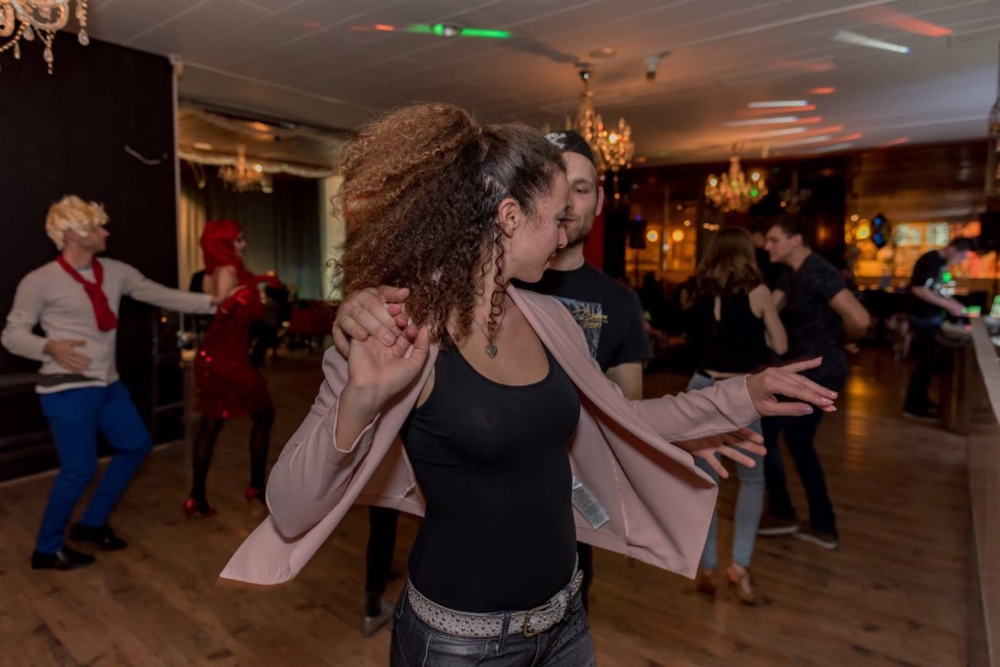

LA
Linijski stil · On1Izrazito orijentiran show elementima, s puno eksplozivnosti, dinamike i breakova. Nastao je u Los Angelesu i raširio se po cijelom svijetu, posebno u Europi.
Naslovnica / O salsi
Salsa je nastala mješavinom latinoameričkih i karipsko-afričkih ritmova. Pruža odličnu rekreaciju i zabavu na svim stupnjevima znanja i idealna je za sve generacije.
Nazvani su prema mjestu nastanka. Uz salsu se uče i srodni plesovi: cha-cha-cha, bachata i merengue.
Izrazito orijentiran show elementima, s puno eksplozivnosti, dinamike i breakova. Nastao je u Los Angelesu i raširio se po cijelom svijetu, posebno u Europi.
Orijentiran na plesnjake, s manje zahtjevnih elemenata potrebnih za pozornicu, pa je bliži rekreativnim plesačima. U NY stilu ples se vrti oko plesačice, pa dame više uživaju u lady stylingu.
Jednostavne figure i puno body movementa, onako kako se pleše na Kubi. Rueda je oblik u kojem parovi plešu u krugu, a jedna osoba izvikuje naredbe.

Možete ići plesati odmah!Postoji posebna salsa moda: rastezljive pamučne haljine, dimije i slična udobna odjeća. Za obuću plesne cipele s petom, uz navlaku. Ne zaboravite rezervnu odjeću i ručnik.
Hlače što šire i komotnije, najbolje lan i pamuk. Neke plesačice ne vole majice bez rukava. U početku je dobra bilo koja tenisica koja kliže po podiju. Rezervna odjeća i ručnik su obavezni.
Postoje posebne cipele za latino i standardne plesove, jazz i balet. U Splitu ih možete kupiti u specijaliziranoj trgovini Pirouette ili naručiti online.
Javite ime i prezime te koji vam termin odgovara na broj 098 330 260 (poziv ili WhatsApp). Možete poslati i upit za tečaj koji vas zanima, a mi se javljamo čim krenu nove početničke grupe.
Za upis u redovnu grupu odaberite ples i grupu te uplatite prvi mjesec članarine putem online prijave. Prijaviti se možete i osobno u Centru plesa.
Ne, možete doći sami. Učimo tehniku vođenja i slijeđenja (lead and follow) i figure (turn patterns), a partneri se tijekom sata rotiraju. Nikad nećete biti bez partnera duže od jednog rotiranja.
Ako želite ostati s osobom s kojom ste se upisali, recite instruktoru na početku kruga. Ipak preporučujemo rotiranje zbog boljeg napretka i bržeg uočavanja vlastitih i tuđih grešaka.
Za početak je svakodnevna obuća u redu, no preporučujemo obuću s kožnim đonom koja pokriva cijelo stopalo. Gumeni đon se lijepi za pod i kod okreta se možete ozlijediti, a sandale i otvorene cipele ne daju potporu koja vam treba.
Za početak su odlične papučice za balet ili jazz, dok ne naučite plesati cijelim stopalom. Odjeća neka bude udobna i pamučna (tajice, trenirka), a ponesite i suhu odjeću za presvlačenje.
Sve cipele s visokom petom, plesne i druge, moraju imati gumenu navlaku za petu. Tako se štiti parket i drugi plesači na koje slučajno nagazite, a i peta dulje traje. Dok nemate navlaku, dolazite u papučicama za jazz ili balet.
Početni tečaj salse ima tri stupnja (Beginner 1, 2 i 3) od po dva mjeseca, ukupno šest mjeseci. Slijedi srednji stupanj (Intermediate) od četiri mjeseca, a napredni tečaj (Advanced) počinje nakon deset mjeseci plesanja. Iz napredne grupe gradi se show-grupa za nastupe.
Ako napredujete brže od grupe, pitajte instruktora za procjenu i prijelaz u napredniji tečaj.
Odmah! Što više plešete, brže napredujete. Na satu se nauče novi koraci, a propleše se upravo na plesnjaku.